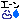
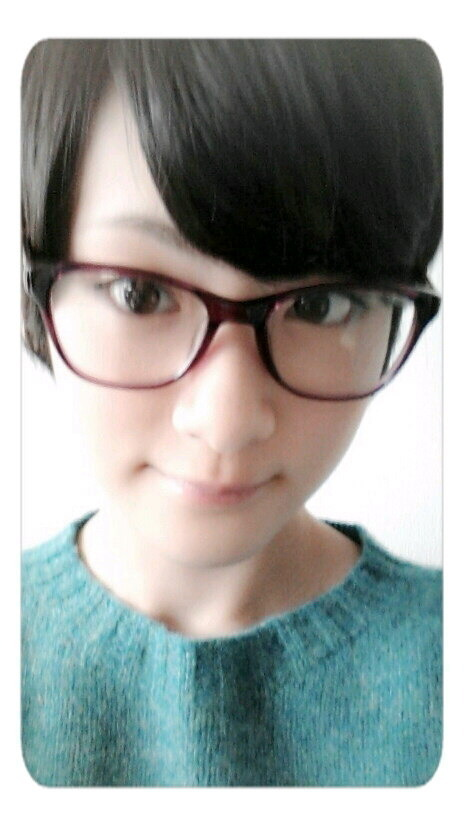

| 2012/11 01 Thu | ぐはぁ(吐 血) |
質問返し第２回目だよん!!今日から１１月だな〜ヽ(・∀・)ノ
一年過ぎるのはぇーよっ!!
Q、朝型？夜型？
朝方から夜型に進化した。
Q、体調大丈夫？
元気すぎます〜ヽ(・∀・)ノ
心配かけてごめんなさい

Q、鳥取行ってみたいと思う？
行ったことないから行きたい!!
呼んでくれっ(笑)
Q、へばなに代わる、秋田弁のあいさつ教えて。
まんずな〜
(またね〜ヽ(・∀・)ノ)
Q、同じ高校生でHKT48のセンターで頑張っている兒玉遥ちゃんのことを、意識することはありますか？
すごくかわいいですよね!!ぜひ会ったら一回でいいからほっぺたをつんつんしたい。
変態じゃないよ。
Q、フランス以外で、どこの国行きたい？
ハワイ!!
スキューバダイビング的なのやりたい!!
Q、いくちゃんてどんな人？いくちゃん好き？
生田社長(いこまはほぼこう呼んでいる)はめちゃくちゃ面白い。
頭いいのに抜けてる所とか凄くよい。いつもツッコミしてます。
Q、携帯のメルアドに入れる言葉をひとつ、考えてください。
一つだけね。
ａ
Q、生駒ちゃんのニックネーム何がいい？
生駒ちゃんがニックネームだよ。
Q、文化祭では、どんな選曲が高まると思う？
いこまは文化祭ではっちゃけるタイプではなかったので、難しいの〜
逆におしえーてくれ。
Q、オフの日の過ごし方教えて？
寝る、マンガ読む、コンビニで食料調達、本屋いってマンガ買う、読む、風呂、寝る。
それだけ。

Q、乃木坂でユニット組むなら、どのメンバーで、どんなユニットがいい？
うーん。
でもやるなら乃木坂で二次元が好きなメンバーが集まってやったら面白いかも〜ヽ(・∀・)ノ
Q、由利本荘市に、なまはげ来るの？
来ないよ〜
基本的に男鹿に現れるよなまはげ。
Q、乃木坂以外で、どんな活動がしたいですか？
モデルさんやりたい!!
なぜかと言うと、喋るよりも、黙って決め顔してる方がよいからです。
決まりに決まりまくる確率が上がるからです。

メガネ落ち着く〜

へばなっ!!
コメント(153)
2012/11/01 10:00